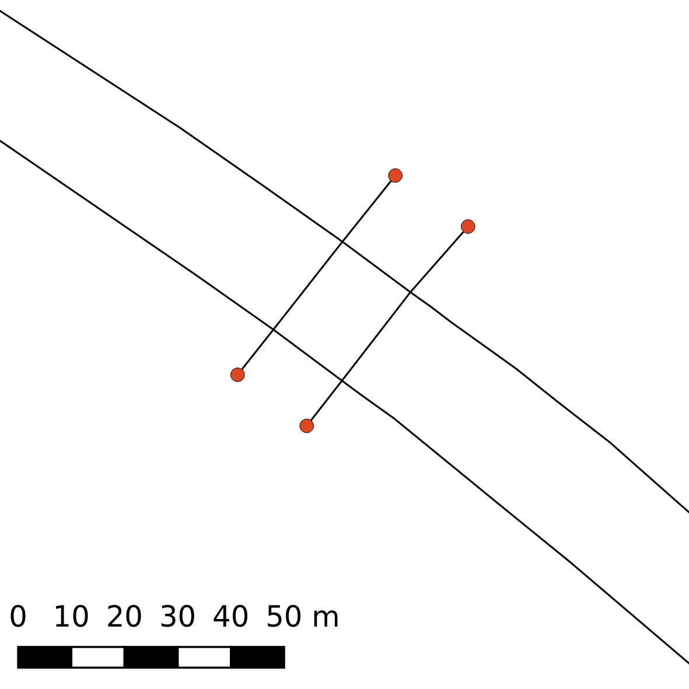
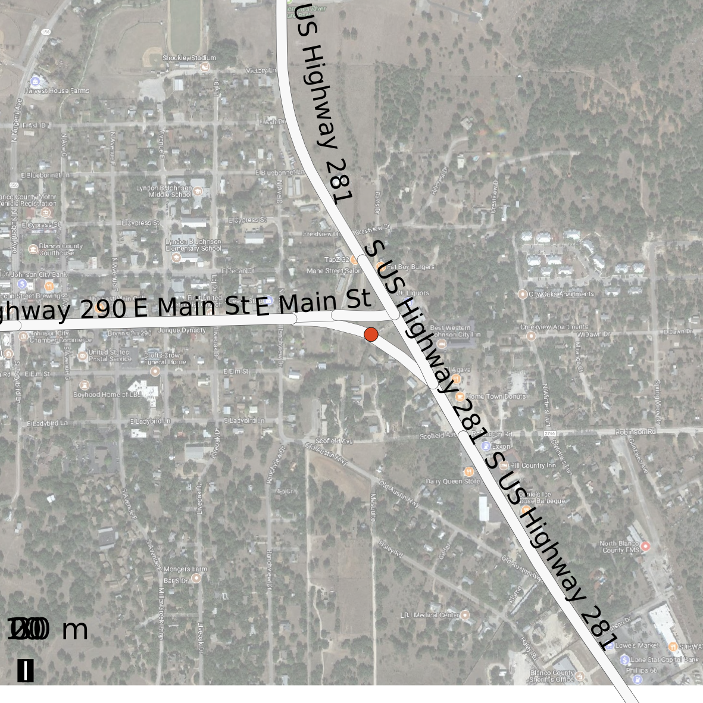

1 Introduction
This report documents the UW/TRAC method for truck routing for the FRATIS project. The application runs on a combination of PostgreSQL with PostGIS (the spatial data management and analysis package for PostgreSQL), which is responsible for the main analytic processes, and RStudio, which provides the run-time interface and rendering engine.
1.1 Logic
The routing is performed using the pgr_dijkstra family of models in PostGIS. The logic follows these steps:
- Origin and destination lat/long values are provided by the user
- Within a proximity (default of 10 km) of these O/D points, a number of network vertices are selected (default of 10). This is necessary, rather than simply selecting the closest vertex, which could be on the wrong side of the roadway.
- For each pair of O/D vertices, a least-cost route is generated (where cost is the average time for a truck to traverse a road segment).
- The route with the shortest duration is selected as the “base” route.
- The start and end vertices for the base route are then used to generate routes passing by way of “via” alternate vertices using the
pgr_dijkstraviafunction. The two fastest alternatives are selected as the “altbase” alternatives. - Optionally, delays can be introduced into the estimates of trip times. The travel bounding interval for each segment in the entire route is compared with the bounding interval of road work delays. If there is any time overlap affecting any segments in any of the routes, length-weighted apportioning of the delay is applied to the affected segments (i.e., by recomputing time to traverse the affected segments).
- With “base” and “altbase” routes defined, a time-stepping algorithm is applied to estimate traversal time for each segment.
- Time of departure or arrival is specified.
- Stepping forward (or backward), segment by segment, the day of week (DOW) and hour of traversing the segment is used to pull related data from an empirical DOW/hour segment speed table, and the matching speed is applied to the segment.
- If delays are used, the additional time to traverse the segment is added.
- The steps are repeated for each segment, giving an estimate of the time stamp at the beginning and end of each segment.
- Distances and travel times are summed across contiguously named road segments in the route (i.e., driving directions), and segments are aggregated by contiguous roadway name.
The name-aggregated routes are displayed in a web page with Leaflet maps.
2 Setup
2.1 Inputs
- topologically connected network with NPMRDS IDs on segments requires pgCreateTopology fields as well as speed_delay float
- “via” locations for generating alternative routes
- NPMRDS time table data for assigning mean speeds per segment and for estimating travel time from time-stepping algorithm
- work zones table (CSV format)
- single work zone ID related to one or more NPMRDS IDs
- work zone delay table (CSV format)
- work zone ID with start and end time stamps and time delay for the entire zone
- “Via” points for generating alternate routes. These were generated ad hoc to establish some routes that may not have been on the main I-35 corridor, as shown in Figure 1.
# get PostGIS data
# get data
myroute <- get_postgis_query(fratis, "select * from npmrds.roads_topo_vertices_pgr where id in (select id from npmrds.via_vertex)", geom_name="the_geom")
# sf type
myroutesf <- st_as_sf(myroute)
# to wgs84
myroutewgs84 <- st_transform(myroutesf, crs=4326)
# data frame for classes etc.
mydf <- myroutewgs84 %>% st_set_geometry(NULL)
# a leaflet
cap_via <- figure_nums(name = "cap_via", caption = "'Via' points for selecting alternate routes")
m <- leaflet(myroutewgs84) %>% addMarkers() %>% addTiles()
m3 Data preparation steps
- Clean road data (not necessary if high quality, topologically correct data are used)
- Generate pgRouting topology (establishes network connectivity relationships, identifying segments and vertices)
- Starts with an “edge” (network) PostGIS table, generates a vertices (point) PostGIS table
- Assign time of travel for each segment
- Obtain average speeds per TMC segment from NPMRDS
- Calculate travel time as impedance: \(t = d / r\)
- Assign reverse impedance (either a very high number or a negative number), to prevent from routing the wrong way on 1-way roadways
- Create “work zone” CSV file enumerating zones and the TMCs within each zone (Table 1)
- Create “work delays” CSV file enumerating zones, start and end time of work (Table 2)
cz <- read.csv("/projects/fratis/npmrds/construction_zones.csv")
tcap0 <- table_nums(name = "tcap0", caption = "Work zones file")
kable(cz, format = "html", caption = tcap0) %>% kable_styling(bootstrap_options = c("striped", "hover", "condensed", "responsive"), full_width = F, position = "left")| zone_num | tmc |
|---|---|
| 1 | 111+06067 |
| 1 | 111P06066 |
| 2 | 111-06039 |
| 2 | 111-06040 |
| 2 | 111N06039 |
| 2 | 111N06040 |
| 2 | 111N06041 |
| 3 | 111-06065 |
| 3 | 111-06066 |
| 3 | 111N06066 |
| 4 | 111-04616 |
| 4 | 111N04617 |
| 4 | 111N04616 |
cd <- read.csv("/projects/fratis/npmrds/construction_delays.csv")
tcap1 <- table_nums(name = "tcap1", caption = "Work delays file")
kable(cd, format = "html", caption = tcap1) %>% kable_styling(bootstrap_options = c("striped", "hover", "condensed", "responsive"), full_width = F, position = "left")| zone_num | time_start | time_end | delay_minutes |
|---|---|---|---|
| 1 | 2017-04-19 10:00 | 2017-04-20 06:00 | 10 |
| 2 | 2017-04-19 10:00 | 2017-04-20 06:00 | 20 |
| 3 | 2017-04-19 10:00 | 2017-04-20 06:00 | 30 |
| 4 | 2017-04-19 10:00 | 2017-04-20 06:00 | 50 |
4 Running
Running the application is done in RStudio with Shiny. The Shiny application has data entry widgets for the various parameters (Figure 2).

Figure 2: Run-time parameter inputs in Shiny
As the system is running, messages are displayed in the RStudio console (Figure 3).
Figure 3: RStudio interface showing console messages
When the run is complete, the Shiny window will show “DONE” at the bottom and present a hyperlink to the page displaying route information in tabular and mapped formats (Figure 4).
Figure 4: Shiny interface showing run completed
Run time parameters file example:
params <- read.csv("params.csv")
tcap2 <- table_nums(name = "tcap2", caption = "Run time parameters")
kable(params, format = "html", caption = tcap2) %>% kable_styling(bootstrap_options = c("striped", "hover", "condensed", "responsive"), full_width = F, position = "left")| setting | values |
|---|---|
| delay CSV | /projects/fratis/npmrds/construction_delays.csv |
| zones CSV | /projects/fratis/npmrds/construction_zones.csv |
| edge tablename | npmrds.roads_topo |
| edge geometry field | the_geom_32614 |
| EPSG spatial reference ID | 32614 |
| speed field | speed_truck |
| cost field | cost_truck |
| reverse cost field | reverse_cost_truck |
| vertex tablename | npmrds.roads_topo_vertices_pgr |
| vertex geometry field | the_geom |
| search tolerance for vertices around O/D | 10000 |
| number of vertices to search around O/D | 10 |
| depart or arrive time | 2017-04-19 12:00 |
| origin latitude | 32.828747 |
| origin longitude | -97.201056 |
| destination latitude | 29.447291 |
| destination longitude | -98.447602 |
| forward | true |
5 Results
A sample of results is shown in Figure 5 and Figure 6.

Figure 5: Example of completed run

Figure 6: Example of completed run
A results using arrival time is shown in Figure 7.
Figure 7: Example of completed run using arrival time as a parameter
An example of output using specified start time: results_start_time.pdf, and one with specified arrival time: results_arrival_time.pdf.
6 Appendix
This appendix contains sections with greater detail on various processes needed to prepare data for routing, including code chunks with the R and SQL code for various functions.
6.1 Database structure
The PostgreSQL database was set up with several schemas:
- postgis, where the PostGIS extension was installed
create schema postgis; create extension postgis with schema postgis - npmrds, where geometry and speed tables are located
6.2 Speed data
Speed data were obtained from NPMRDS for April, 2017, with one-hour measurement interval.
In the following code chunks (one for all vehicles and one for trucks only):
- speed data were written to the database
- average speed per TMC was calculated
- average speed per TMC per day of week (1-7) and hour (0-23) Not all TMCs had measurements at every DOW/hour combination; in those cases, speeds were assigned using the average speed for the TMC across the entire measurement period.
# does the speed data exist
if(!dbGetQuery(conn = fratis, statement = "select count(*) = 1 as texists from information_schema.tables where table_schema = 'npmrds' and table_name = 'speed_raw';")$texists){
# write raw speed to the db
sql <- "create table npmrds.speed_raw (
tmc text
, measurement_tstamp timestamptz
,speed float
,average_speed float
,reference_speed float
,travel_time_seconds float
,data_density text);"
O <- dbGetQuery(conn = fratis, statement = sql)
cmd <- "psql fratis -c \"\\copy npmrds.speed_raw from '/projects/fratis/npmrds/export_040318_v1/Readings.csv'\ with csv header\""
system(cmd)
sql_npmrds.speed_raw_corrected <- "
--fill in means on time data
drop table if exists npmrds.speed_raw_corrected;
create table npmrds.speed_raw_corrected as
with
--raw
tr as (select * from npmrds.speed_raw)
--min and max time stamps
, tt as (select min(measurement_tstamp), max(measurement_tstamp) from tr)
--generate a series from each time stamp
, t as (select generate_series(min, max, interval '1 hour') as measurement_tstamp from tt)
, td as (select measurement_tstamp, extract(isodow from measurement_tstamp) as iso_dow, extract(hour from measurement_tstamp) as hr from t)
--unique tmcs
, tmcs as (select distinct tmc from tr)
--combine TMCs and time stamps
, tts as (select * from td, tmcs order by tmc, measurement_tstamp)
--average over TMCs
, tmcavg as (select tmc, avg(speed) as speed_avg from tr group by tmc order by tmc)
--join and case
, f as (select distinct tmc, measurement_tstamp, coalesce(speed, speed_avg) as speed, iso_dow, hr from tr full join tts using(tmc, measurement_tstamp, iso_dow, hr) left join tmcavg using(tmc) order by tmc, measurement_tstamp)
select * from f;
create index idx_speed_raw_corrected_mc on npmrds.speed_truck_raw_corrected using btree(tmc, iso_dow, hr);"
O <- dbGetQuery(conn = fratis, statement = sql_npmrds.speed_raw_corrected)
# day of week and hour
# isodow = The day of the week as Monday(1) to Sunday(7)
# https://www.postgresql.org/docs/current/static/functions-datetime.html
sql <- "alter table npmrds.speed_raw add column iso_dow integer;
alter table npmrds.speed_raw add column hr integer;
update npmrds.speed_raw set iso_dow = extract(isodow from measurement_tstamp);
update npmrds.speed_raw set hr = extract(hour from measurement_tstamp);"
O <- dbGetQuery(conn = fratis, statement = sql)
# summaries
sql <- "
--drop and create table
--drop and create table
drop table if exists npmrds.speed_dow_hr;
create table npmrds.speed_dow_hr as
--cte
with
--start on a Monday
d as (select '1970-01-05 00:00:00'::timestamptz as d)
--generate 2 weeks of DOWs
, day1 as (select generate_series(d.d, d.d + 13 * interval '1 day', interval '1 day') as xdate from d)
, day2 as (select row_number() over() as iso_dow, * from day1)
--get mean-filled speeds
, x as (select * from npmrds.speed_raw_corrected
)
--aggregate over DOW/hour combination
, y as (select tmc, iso_dow, hr, avg(speed) as speed from x group by tmc, iso_dow, hr order by tmc, iso_dow, hr)
--another copy incremented by a week for wraparounds
, z as (select tmc, iso_dow + 7 as iso_dow, hr, speed from y)
, f as (select * from y union all select * from z)
, f1 as (select f.*, xdate + hr * interval '1 hour' as measurement_tstamp from f join day2 using(iso_dow))
select * from f1 order by tmc, measurement_tstamp;
create index idx_speed_dow_hr on npmrds.speed_dow_hr using btree(tmc, iso_dow, hr);
--aggregate by segment to get overall estimated speed
--drop and create table
drop table if exists npmrds.speed_segment;
create table npmrds.speed_segment as
--cte
with
x as (select *,
--if measured speed is null use average speed
case when speed is null then average_speed
else speed
end as spd
from npmrds.speed_raw
)
--aggregate
select tmc, avg(spd) as speed from x group by tmc order by tmc;"
O <- dbGetQuery(conn = fratis, statement = sql)
}# because these processes take a relatively long time, eval only once.
# does the speed_truck data exist
if(!dbGetQuery(conn = fratis, statement = "select count(*) = 1 as texists from information_schema.tables where table_schema = 'npmrds' and table_name = 'speed_truck_raw';")$texists){
# write raw speed to the db
sql <- "create table npmrds.speed_truck_raw (
tmc text
, measurement_tstamp timestamptz
,speed float
,average_speed float
,reference_speed float
,travel_time_seconds float
,data_density text);"
O <- dbGetQuery(conn = fratis, statement = sql)
cmd <- "psql fratis -c \"\\copy npmrds.speed_truck_raw from '/projects/fratis/npmrds/Truck-for-I35-test/Truck-for-I35-test.csv'\ with csv header\""
system(cmd)
# day of week and hour
sql <- "alter table npmrds.speed_truck_raw add column iso_dow integer;
alter table npmrds.speed_truck_raw add column hr integer;
update npmrds.speed_truck_raw set iso_dow = extract(isodow from measurement_tstamp);
update npmrds.speed_truck_raw set hr = extract(hour from measurement_tstamp);"
O <- dbGetQuery(conn = fratis, statement = sql)
# summaries
sql <- "
--drop and create table
drop table if exists npmrds.speed_truck_dow_hr;
create table npmrds.speed_truck_dow_hr as
--cte
with
--the first date is a Monday
d as (select '1970-01-05 00:00:00'::timestamptz as d)
--generate a series by day from the first day to first day plus 13 days (2 weeks)
, day1 as (select generate_series(d.d, d.d + 13 * interval '1 day', interval '1 day') as xdate from d)
--get isodow (day 1 = Monday)
, day2 as (select row_number() over() as iso_dow, * from day1)
--truck speeds
, x as (select * from npmrds.speed_truck_raw_corrected)
--TMC length in miles
, tmc as (select tmc, st_length(the_geom_32614) / 0.3048 / 5280 as length_mi from npmrds.roads_topo)
--aggregate -- average speed over unique isodow and hour
, y as (select tmc, iso_dow, hr, avg(speed) as speed from x group by tmc, iso_dow, hr order by tmc, iso_dow, hr)
--another copy incremented by a week for wraparounds
, z as (select tmc, iso_dow + 7 as iso_dow, hr, speed from y)
, f as (select * from y union all select * from z)
, f1 as (select f.*, xdate + hr * interval '1 hour' as measurement_tstamp from f join day2 using(iso_dow))
--join with TMC length to estimate traversal time in hours
, f2 as (select f1.*, t.length_mi, t.length_mi / f1.speed as traverse_hr from f1 join tmc as t using(tmc))
select * from f2 order by tmc, measurement_tstamp;
create index idx_speed_truck_dow_hr on npmrds.speed_truck_dow_hr using btree(tmc, iso_dow, hr);
-- aggregate by segment to get overall estimated speed
--drop and create table
drop table if exists npmrds.speed_truck_segment;
create table npmrds.speed_truck_segment as
--cte
with
x as (select *,
--if measured speed is null use average speed
case when speed is null then average_speed
else speed
end as spd
from npmrds.speed_truck_raw
)
--aggregate
select tmc, avg(spd) as speed from x group by tmc order by tmc;"
O <- dbGetQuery(conn = fratis, statement = sql)
}6.3 PostGIS topology
In order for routing to work, it is necessary to have vertices at places where roads intersect. Optimally, the roads data would be structured with the correct topological linkages, but in the case of the NPMRDS data, it was necessary to force the creation of vertices.
See Use PostGIS topologies to clean-up road networks
The following section shows commands and output for generating this topology for the data set used in this project.
--Create and associate the PostGIS topology:
select topology.createtopology('topo_npmrds',32614);
select topology.addtopogeometrycolumn('topo_npmrds','npmrds','texas','the_geom_32614_topo','LineString');
addtopogeometrycolumn
-----------------------
2
(1 row)
--Convert linestrings to vertices and edges within the topology:
UPDATE npmrds.texas SET the_geom_32614_topo = topology.toTopoGeom(the_geom_32614, 'topo_npmrds', 1, 0.5);
select topology.createtopology('topo_npmrds_roads',32614);
select topology.addtopogeometrycolumn('topo_npmrds_roads','npmrds','roads','the_geom_32614_topo','LineString');
UPDATE npmrds.roads SET the_geom_32614_topo = topology.toTopoGeom(the_geom_32614, 'topo_npmrds_roads', 1, 0.5);6.3.1 Join attributes, topologically split geometries, and speeds, also create id, source, and target columns:
drop table if exists npmrds.texas_topo;
create table npmrds.texas_topo as
with
--original roads
t as (select tmc, the_geom_32614_topo, roadnumber, roadname from npmrds.texas)
--relation table
, r as (select * from topo_npmrds.relation)
--edge table
, e as (select edge_id, geom as the_geom_32614 from topo_npmrds.edge)
--speed averages
, s as (select * from npmrds.speed_segment)
--join to get geoms
, f0 as (select t.tmc, t.roadnumber, t.roadname, e.the_geom_32614 from t, e, r where e.edge_id = r.element_id AND r.topogeo_id = (t.the_geom_32614_topo).id)
--join to get speeds
, f1 as (select f0.*, s.speed from f0, s where f0.tmc = s.tmc)
--translate speed to impedance, meters to miles per hour
,f2 as (select *, st_length(the_geom_32614) / 1609.34 / speed as cost,-10000000 as reverse_cost from f1)
select tmc, roadnumber, roadname, speed, cost, reverse_cost, row_number() over() as id, null::int as source, null::int as target, the_geom_32614 from f2 order by tmc;6.3.2 Make routable
fratis=# SELECT pgr_createTopology(edge_table := 'npmrds.texas_topo', tolerance := 0.5, the_geom := 'the_geom_32614', clean := true);
NOTICE: PROCESSING:
NOTICE: pgr_createTopology('npmrds.texas_topo', 0.5, 'the_geom_32614', 'id', 'source', 'target', rows_where := 'true', clean := f)
NOTICE: Performing checks, please wait .....
NOTICE: Creating Topology, Please wait...
NOTICE: 1000 edges processed
NOTICE: 2000 edges processed
NOTICE: 3000 edges processed
NOTICE: 4000 edges processed
NOTICE: 5000 edges processed
NOTICE: 6000 edges processed
NOTICE: 7000 edges processed
NOTICE: 8000 edges processed
NOTICE: 9000 edges processed
NOTICE: 10000 edges processed
NOTICE: 11000 edges processed
NOTICE: 12000 edges processed
NOTICE: 13000 edges processed
NOTICE: 14000 edges processed
NOTICE: 15000 edges processed
NOTICE: 16000 edges processed
NOTICE: 17000 edges processed
NOTICE: 18000 edges processed
NOTICE: 19000 edges processed
NOTICE: 20000 edges processed
NOTICE: 21000 edges processed
NOTICE: 22000 edges processed
NOTICE: 23000 edges processed
NOTICE: 24000 edges processed
NOTICE: -------------> TOPOLOGY CREATED FOR 24524 edges
NOTICE: Rows with NULL geometry or NULL id: 0
NOTICE: Vertices table for table npmrds.texas_topo is: npmrds.texas_topo_vertices_pgr
NOTICE: ----------------------------------------------
pgr_createtopology
--------------------
OK
(1 row)6.4 Fixing geometry
It was found that geometries were missing or otherwise problematic. See figures:
Extra lines:
include_graphics("network_data_problems/dangling_nodes.png")
Missing links:
include_graphics("network_data_problems/missing_links.png")
Missing ramps:
include_graphics("network_data_problems/missing_ramp.png")
Missing ramp added:
include_graphics("network_data_problems/missing_ramp_added.png")
Misnamed roads:
include_graphics("network_data_problems/wrongway_feldman.png")
include_graphics("network_data_problems/wrongway_roger.png")
In order to fix missing links, all nodes that had only one connecting segment were identified (n = 1031), and each was visually inspected and repaired where applicable (generally adding missing links and connections).
Script for generating lone vertices
drop table if exists npmrds.lonevertex;
create table npmrds.lonevertex as
with
--vetices
v as (select id, the_geom_32614 from npmrds.texas_topo_vertices_pgr)
--lines
, l as (select tmc, source, target, roadname, st_length(the_geom_32614) as length_m from npmrds.texas_topo)
--texas (for f-system)
, t as (select tmc, f_system from npmrds.texas)
--lines with f system
, lt as (select * from l join t using(tmc) where f_system < 4)
--relate
, vl as (select * from v join lt on(v.id = lt.source or v.id = lt.target))
--count
, vlc as (select id, count(*) from vl group by id)
--solitaries
, vlc1 as (select * from vlc where count = 1)
, f as (select * from vlc1 order by id)
--points
, p as (select id, count, the_geom_32614 from f join v using(id))
--join back on texas_topo for attributes
, pt as (select row_number() over(order by length_m) as gid, * from p join lt on(p.id = lt.source or p.id = lt.target) order by length_m)
--select * from p;
select * from pt;A copy of the roads was created for editing (npmrds.texas_topo_edited_20180426), which was then used to create a pgRouting topology and vertices, and its own lone vertex table:
alter table npmrds.texas_topo_edited_20180426 rename to roads;
SELECT pgr_createTopology(edge_table := 'npmrds.roads', tolerance := 0.5, the_geom := 'the_geom_32614', clean := true);After editing the line data it was necessary to redo the PostGIS topology.
--This creates and updates the PostGIS topology
select topology.createtopology('topo_npmrds_roads',32614);
select topology.addtopogeometrycolumn('topo_npmrds_roads','npmrds','roads','the_geom_32614_topo','LineString');
UPDATE npmrds.roads SET the_geom_32614_topo = topology.toTopoGeom(the_geom_32614, 'topo_npmrds_roads', 1, 0.5);
--This then joins the new topology data with road attribute data
drop table if exists npmrds.roads_topo;
create table npmrds.roads_topo as
with
--original roads
t as (select tmc, the_geom_32614_topo, roadnumber, roadname from npmrds.roads)
--relation table
, r as (select * from topo_npmrds_roads.relation)
--edge table
, e as (select edge_id, geom as the_geom_32614 from topo_npmrds_roads.edge)
--speed averages
, s as (select * from npmrds.speed_truck_segment)
--join to get geoms
, f0 as (select t.tmc, t.roadnumber, t.roadname, e.the_geom_32614 from t, e, r where e.edge_id = r.element_id AND r.topogeo_id = (t.the_geom_32614_topo).id)
--join to get speeds
, f1 as (select f0.*, s.speed from f0, s where f0.tmc = s.tmc)
--translate speed to impedance, meters to miles per hour
,f2 as (select *, st_length(the_geom_32614) / 1609.34 / speed as cost,-10000000 as reverse_cost from f1)
select tmc, roadnumber, roadname, speed, cost, reverse_cost, row_number() over() as id, null::int as source, null::int as target, the_geom_32614 from f2 order by tmc;
SELECT pgr_createTopology(edge_table := 'npmrds.roads_topo', tolerance := 0.5, the_geom := 'the_geom_32614', clean := true);6.5 PL/pgSQL scripts
This section contains the scripts that create the functions that perform the various steps necessary to perform the routing.
6.5.1 Wrapper
The npmrds_run_wrapper function performs a series of steps, some of which execute SQL code directly (e.g., copying from the work zone delay CSV file to a database table), and some of which call other functions that are defined in other scripts in this section (e.g., many-to-many O/D routing). The function reads a number of different parameters, as shown in Running.
cat(readLines("sql/npmrds_run_wrapper.sql"), sep = "\n")--master function for generating routes
drop function if exists npmrds_run_wrapper(
_constructiondelayfile text
, _constructionzonefile text
, _viavertexfile text
, _edge_tablename text
, _edge_geomfield text
, _speed_tablename text
, _srid int
, _edge_speedfield text
, _edge_costfield text
, _edge_reversecostfield TEXT
, _edge_vertex_tablename text
, _edge_vertex_geomfield text
, _mytol integer
, _n_verts integer
, _time_init text
, _origin_lat float
, _origin_lon float
, _dest_lat float
, _dest_lon float
, _forward bool);
create function npmrds_run_wrapper(
_constructiondelayfile text
, _constructionzonefile text
, _viavertexfile text
, _edge_tablename text
, _edge_geomfield text
, _speed_tablename text
, _srid int
, _edge_speedfield text
, _edge_costfield text
, _edge_reversecostfield TEXT
, _edge_vertex_tablename text
, _edge_vertex_geomfield text
, _mytol integer
, _n_verts integer
, _time_init text
, _origin_lat float
, _origin_lon float
, _dest_lat float
, _dest_lon float
, _forward bool default true)
returns void as
$$
declare
_sql text;
_timestep_sql text;
begin
_sql := '
--############################### CLEANING
--start by house cleaning
select routing_cleaner();
--############################### DELAYS
--drop delay if exists
drop table if exists routing.constructiondelay;
--create table
create table routing.constructiondelay(zone_num int, delay_start timestamptz, delay_end timestamptz, delay_minutes int);
--copy data into table
copy routing.constructiondelay from '''|| _constructiondelayfile ||''' with csv header;
--############################### WORK ZONES
--drop zones if exists
drop table if exists routing.construction_zone;
--create table
create table routing.construction_zone(zone_num int, tmc text);
--copy data into table
copy routing.construction_zone from '''|| _constructionzonefile ||''' with csv header;
--############################### ISO_DOW, HR, TMC format from delays to make a new version of the ISODOW table
--############################### VIA POINTS
drop table if exists routing.via_vertex;
create table routing.via_vertex (id integer);
copy routing.via_vertex from '''|| _viavertexfile ||''' with csv header;
--#######################
--run routes to establish O/D, segments
--no delay, base route, to establish origin, destination, and sequence of TMCs
select * from npmrds_dijkstra_m2m_ll(
_out_tablename := ''baseroute''
, _time_start := '''|| _time_init ||'''
, _origin_lat := '|| _origin_lat ||'
, _origin_lon := '|| _origin_lon ||'
, _dest_lat := '|| _dest_lat ||'
, _dest_lon := '|| _dest_lon ||'
, _srid := '|| _srid ||'
, _edge_tablename := '''|| _edge_tablename ||'''
, _edge_geomfield := '''|| _edge_geomfield ||'''
, _edge_costfield := '''|| _edge_costfield ||'''
, _edge_reversecostfield := '''|| _edge_reversecostfield ||'''
, _edge_speedfield := '''|| _edge_speedfield ||'''
, _edge_vertex_tablename := '''|| _edge_vertex_tablename ||'''
, _edge_vertex_geomfield := '''|| _edge_vertex_geomfield ||'''
, _mytol := '|| _mytol ||'
, _n_verts := '|| _n_verts ||');
--"via"
--no delay
select * from npmrds_dijkstra_ll_via(
_out_tablename := ''altbase_''
, _route_tablename := ''routing.baseroute''
, _edge_tablename := '''|| _edge_tablename ||''');
--####################### TIME STEPPING
--bestroute
select
tmc, rgid, roadname, length_mi, time_start_of_segment, time_end_of_segment, hours, geom as '|| _edge_geomfield ||'
into routing.bestroute from
npmrds_route_timestep_dow_hr_delay(
_route_table := ''baseroute''
, _route_geom_field := '''|| _edge_geomfield ||'''
, _init_time := '''|| _time_init ||'''
, _speed_table := '''|| _speed_tablename ||'''
, _forward := '|| _forward ||'
, _use_delay := false
) order by rgid;
--bestroute with delay
select
tmc, rgid, roadname, length_mi, time_start_of_segment, time_end_of_segment, hours, geom as '|| _edge_geomfield ||'
into routing.bestroute_delay from
npmrds_route_timestep_dow_hr_delay(
_route_table := ''baseroute''
, _route_geom_field := '''|| _edge_geomfield ||'''
, _init_time := '''|| _time_init ||'''
, _speed_table := '''|| _speed_tablename ||'''
, _forward := '|| _forward ||'
, _use_delay := true
) order by rgid;
--alternative 1
--no delay
select
tmc, rgid, roadname, length_mi, time_start_of_segment, time_end_of_segment, hours, geom as '|| _edge_geomfield ||'
into routing.altroute_best1
from npmrds_route_timestep_dow_hr_delay(
_route_table := ''altbase_best1''
, _route_geom_field := '''|| _edge_geomfield ||'''
, _init_time := '''|| _time_init ||'''
, _speed_table := '''|| _speed_tablename ||'''
, _forward := '|| _forward ||'
, _use_delay := false
) order by rgid;
select
--with delay
tmc, rgid, roadname, length_mi, time_start_of_segment, time_end_of_segment, hours, geom as '|| _edge_geomfield ||'
into routing.altroute_best1_delay
from npmrds_route_timestep_dow_hr_delay(
_route_table := ''altbase_best1''
, _route_geom_field := '''|| _edge_geomfield ||'''
, _init_time := '''|| _time_init ||'''
, _speed_table := '''|| _speed_tablename ||'''
, _forward := '|| _forward ||'
, _use_delay := true
) order by rgid;
--alternative 2
--no delay
select
tmc, rgid, roadname, length_mi, time_start_of_segment, time_end_of_segment, hours, geom as '|| _edge_geomfield ||'
into routing.altroute_best2
from npmrds_route_timestep_dow_hr_delay(
_route_table := ''altbase_best2''
, _route_geom_field := '''|| _edge_geomfield ||'''
, _init_time := '''|| _time_init ||'''
, _speed_table := '''|| _speed_tablename ||'''
, _forward := '|| _forward ||'
, _use_delay := false
) order by rgid;
--with delay
select
tmc, rgid, roadname, length_mi, time_start_of_segment, time_end_of_segment, hours, geom as '|| _edge_geomfield ||'
into routing.altroute_best2_delay
from npmrds_route_timestep_dow_hr_delay(
_route_table := ''altbase_best2''
, _route_geom_field := '''|| _edge_geomfield ||'''
, _init_time := '''|| _time_init ||'''
, _speed_table := '''|| _speed_tablename ||'''
, _forward := '|| _forward ||'
, _use_delay := true
) order by rgid;
--driving data
select * from driving_directions(''routing.bestroute'','''|| _edge_geomfield ||''');
select * from driving_directions(''routing.bestroute_delay'','''|| _edge_geomfield ||''');
select * from driving_directions(''routing.altroute_best1'','''|| _edge_geomfield ||''');
select * from driving_directions(''routing.altroute_best1_delay'','''|| _edge_geomfield ||''');
select * from driving_directions(''routing.altroute_best2'','''|| _edge_geomfield ||''');
select * from driving_directions(''routing.altroute_best2_delay'','''|| _edge_geomfield ||''');
';
raise notice '%', _sql;
execute _sql;
raise notice 'complete.';
end;
$$ language 'plpgsql';
--example
select * from npmrds_run_wrapper(
_constructiondelayfile := '/projects/fratis/npmrds/construction_delays.csv'
, _constructionzonefile := '/projects/fratis/npmrds/construction_zones.csv'
, _viavertexfile := '/projects/fratis/npmrds/via_ids.csv'
, _edge_tablename := 'npmrds.roads_topo'
, _edge_geomfield := 'the_geom_32614'
, _speed_tablename:= 'npmrds.speed_truck_dow_hr'
, _srid := 32614
, _edge_speedfield := 'speed_truck'
, _edge_costfield := 'cost_truck'
, _edge_reversecostfield := 'reverse_cost_truck'
, _edge_vertex_tablename := 'npmrds.roads_topo_vertices_pgr'
, _edge_vertex_geomfield := 'the_geom'
, _mytol := 10000
, _n_verts := 10
, _time_init := '2017-04-19 17:00'
, _origin_lat := 32.66842
, _origin_lon := -97.32203
, _dest_lat := 29.456373
, _dest_lon := -98.402132
, _forward := false);6.5.2 Cleaner
During the routing process, tables are written to the routing schema. As a first step, any tables within that schema are removed.
cat(readLines("sql/routing_cleaner.sql"), sep = "\n")--clean up routing
drop function if exists routing_cleaner();
create function routing_cleaner()
returns void as
$$
declare
_dropsql text;
_dropsql2 text;
_droprec record;
begin
--#######################################
--drop any existing alternate routes
_dropsql := 'select table_name from information_schema.tables where table_schema ~ ''routing''';
for _droprec in execute _dropsql loop
_dropsql2 := 'drop table routing.'|| _droprec.table_name ||'';
execute _dropsql2;
raise notice 'dropping %', _droprec.table_name;
end loop;
end;
$$ language 'plpgsql';
select routing_cleaner();
select table_name from information_schema.tables where table_schema ~ 'routing' ;--and table_name ~ '^altroute';6.5.3 Initial routing
The function npmrds_dijkstra_m2m_ll generates the fastest route between an origin and destination point. The origin and destination longitude and latitude are specified; these points are then used to select a set of vertices around each O/D, and routes are generated from each pair. The fastest of the \(n_{origin} \times n_{destination}\) routes is selected as output.
cat(readLines("sql/npmrds_dijkstra_m2m_ll.sql"), sep = "\n")-- a function to generate the best route
-- creates a named table
--relies on pgr_dijkstra in pgRouting
drop function if exists npmrds_dijkstra_m2m_ll(
_out_tablename text --tablename to create in routing
, _time_start text --time to start
, _origin_lat float --origin latitude
, _origin_lon float --origin longitude
, _dest_lat float --origin latitude
, _dest_lon float --origin longitude
, _srid int --EPSG code for projected data, e.g., 32614 = UTM 12 N
, _edge_tablename text --default 'npmrds.roads_topo' -- the name of the table containing network data, assume has columns id, source, target. e.g., npmrds.texas_noded
, _edge_geomfield text --default 'the_geom_32614' -- column name containing network geometry. e.g., the_geom_32614
, _edge_costfield text --default 'cost_truck' -- column representing costs
, _edge_reversecostfield text --default 'reverse_cost_truck' -- column representing reverse costs
, _edge_speedfield text --default 'speed_truck' -- column containing speed
, _edge_vertex_tablename text --default 'npmrds.roads_topo_vertices_pgr' -- the name of the table containing network nodes data. e.g., npmrds.texas_noded_vertices_pgr
, _edge_vertex_geomfield text --default 'the_geom' -- column name containing vertex geometry
, _mytol int --default 10000
, _n_verts int --default 5
);
--_odtablename: {npmrds.odregional, npmrds.odnational)
--_mytol is the tolerance for looking for vertices around an OD pair's points.
--_n_verts is the number of vertices close to the O and D form many-to-many
create function npmrds_dijkstra_m2m_ll(
_out_tablename text --tablename to create in routing
, _time_start text --time to start
, _origin_lat float --origin latitude
, _origin_lon float --origin longitude
, _dest_lat float --origin latitude
, _dest_lon float --origin longitude
, _srid int --EPSG code for projected data, e.g., 32614 = UTM 12 N
, _edge_tablename text default 'npmrds.roads_topo' -- the name of the table containing network data, assume has columns id, source, target. e.g., npmrds.texas_noded
, _edge_geomfield text default 'the_geom_32614' -- column name containing network geometry. e.g., the_geom_32614
, _edge_costfield text default 'cost_truck' -- column representing costs
, _edge_reversecostfield text default 'reverse_cost_truck' -- column representing reverse costs
, _edge_speedfield text default 'speed_truck' -- column containing speed
, _edge_vertex_tablename text default 'npmrds.roads_topo_vertices_pgr' -- the name of the table containing network nodes data. e.g., npmrds.texas_noded_vertices_pgr
, _edge_vertex_geomfield text default 'the_geom' -- column name containing vertex geometry
, _mytol int default 10000
, _n_verts int default 5)
returns void as
$$
#variable_conflict use_column
DECLARE
_mysql text; -- the SQL string
begin
--if there was no start time entered,use NOW()
if _time_start is null then
_time_start = now();
end if;
_mysql := '
drop table if exists routing.'|| _out_tablename ||';
create table routing.'|| _out_tablename ||' as
with
--start time
tm as (select '''|| _time_start ||'''::timestamptz as time_start)
--tm as (select quote_literal(_time_start)::timestamptz as time_start)
--tolerance
, t as (select '|| _mytol ||' as tol)
--edges
, e as (select *, id as edge, '|| _edge_geomfield ||' as geom_e, '|| _edge_costfield ||', '|| _edge_reversecostfield ||' from '|| _edge_tablename ||')
--vertices
, v as (select id as v_id, '|| _edge_vertex_geomfield ||' as geom_v from '|| _edge_vertex_tablename ||')
--origin, destination
, o as (select st_transform(st_geomfromewkt(''SRID=4326;POINT('|| _origin_lon ||' '|| _origin_lat ||')''), '|| _srid ||') as geom_o)
, d as (select st_transform(st_geomfromewkt(''SRID=4326;POINT('|| _dest_lon ||' '|| _dest_lat ||')''), '|| _srid ||') as geom_d)
--vertices near origin
, vo as (select v.v_id, geom_v from v, o, t where st_dwithin(geom_v, geom_o, t.tol))
--vertices near destination
, vd as (select v.v_id, geom_v, st_distance(geom_v, geom_d) from v, d, t where st_dwithin(geom_v, geom_d, t.tol))
--vertex closest to origin
, vco as (select * from vo, o order by geom_v <-> geom_o limit '|| _n_verts ||')
--vertex closest to destination
, vcd as (select * from vd, d order by geom_v <-> geom_d limit '|| _n_verts ||')
--route
, nd as (select pgr_dijkstra(''SELECT id, source, target, '|| _edge_costfield ||' as cost, '|| _edge_reversecostfield ||' as reversecost FROM '|| _edge_tablename ||' where '|| _edge_costfield ||' is not null'', array[vco.v_id], array[vcd.v_id], true) as c from vco, vcd)
, n0 as (select (c).* from nd)
, n as (select start_vid ||''_''|| end_vid as sevid, * from n0)
--summed hours for shortest path
, hrs as (select sevid, sum(cost) from n group by sevid order by sum(cost) asc limit 1)
--records from shortest path
, nh as (select * from n where sevid = (select sevid from hrs))
--join to edges
, nj as (select nh.*, e.'|| _edge_geomfield ||', e.'|| _edge_speedfield ||', roadname::text, tmc::text, (st_length('|| _edge_geomfield ||') / 1609.34)::float as length_mi from nh left join e using(edge), tm where '|| _edge_geomfield ||' is not null order by path_seq)
--, tx as (select *, time_start + interval ''1 hour'' * agg_cost as time_start_of_segment, time_start + interval ''1 hour'' * (cost + agg_cost) as time_end_of_segment from nj, tm)
, f as (select split_part(sevid, ''_'', 1)::int as start_vertex, split_part(sevid, ''_'', 2)::int as end_vertex, -1 as via_vertex, row_number() over() as rgid, '|| _origin_lat ||'::float as origin_lat, '|| _origin_lon ||'::float as origin_lon, '|| _dest_lat ||'::float as dest_lat, '|| _dest_lon ||'::float as dest_lon,
roadname, tmc, '|| _edge_speedfield ||', cost as hours, length_mi, '|| _edge_geomfield ||'::geometry(LineString, '|| _srid ||') from nj)
select * from f;
create index idx_'|| _out_tablename ||' on routing.'|| _out_tablename ||' using btree(tmc);
'
;
--raise notice '%', _mysql;
execute _mysql;
return;
end;
$$ language 'plpgsql';
-- -- example 1
-- drop table if exists npmrds.austin_sanantonio;
-- create table npmrds.austin_sanantonio as
-- with
-- r as (select * from npmrds_dijkstra_m2m(_time_start := '2017-04-01 12:00:00-07', _odpairid:= 3))
-- , t as (select distinct tmc, roadname from npmrds.roads)
-- , j1 as (select t.roadname, r.* from r join t using(tmc) order by time_start_of_segment)
-- , j2 as (select row_number() over() as seq, * from j1)
-- , j3 as (select row_number() OVER(ORDER BY seq ASC) - row_number() OVER(PARTITION BY roadname ORDER BY seq ASC) AS grp, * from j2 order by seq)
-- , j4 as (select min(seq) over(partition by grp) as seq2, * from j3)
-- , j5 as (select seq2, roadname, date_trunc('second', min(time_start_of_segment)) as time_start_of_segment, date_trunc('second', max(time_end_of_segment)) as time_end_of_segment, round((sum(hours::numeric))*60, 1) as minutes, round(sum(length_mi), 1) as length_mi, st_linemerge(st_union(geom))::geometry(linestring, 32614) as geom from j4 group by seq2, roadname order by seq2)
-- , j6 as (select row_number() over() as gid, * from j5)
-- select * from j6;
--
-- --example 2
-- drop table if exists npmrds.dallas_waco;
-- create table npmrds.wallas_waco as
-- with
-- r as (select * from npmrds_dijkstra_m2m(_time_start := '2017-04-01 12:00:00-07', _odpairid:= 8))
-- , t as (select distinct tmc, roadname from npmrds.roads)
-- , j1 as (select t.roadname, r.* from r join t using(tmc) order by time_start_of_segment)
-- , j2 as (select row_number() over() as seq, * from j1)
-- , j3 as (select row_number() OVER(ORDER BY seq ASC) - row_number() OVER(PARTITION BY roadname ORDER BY seq ASC) AS grp, * from j2 order by seq)
-- , j4 as (select min(seq) over(partition by grp) as seq2, * from j3)
-- , j5 as (select seq2, roadname, date_trunc('second', min(time_start_of_segment)) as time_start_of_segment, date_trunc('second', max(time_end_of_segment)) as time_end_of_segment, round((sum(hours::numeric))*60, 1) as minutes, round(sum(length_mi), 1) as length_mi, st_linemerge(st_union(geom))::geometry(linestring, 32614) as geom from j4 group by seq2, roadname order by seq2)
-- , j6 as (select row_number() over() as gid, * from j5)
-- select * from j6;
--select * from npmrds_dijkstra_m2m_ll('2018-04-23 12:00', 30.2888, -97.62944, 29.456373, -98.402132, 32614);
--select * from npmrds_dijkstra_m2m_ll('2018-04-23 12:00', 31.132861, -97.359295, 30.009145, -97.858829, 32614, 'npmrds.roads', 'the_geom_32614', 'npmrds.roads_vertices_pgr', 'the_geom_32614');
--select * from npmrds_dijkstra_m2m_ll('2018-04-23 12:00', 31.132046, -97.360024, 32.645262, -96.865897, 32614, 'npmrds.roads_topo', 'the_geom_32614', 'npmrds.roads_topo_vertices_pgr', 'the_geom');
--select * from npmrds_dijkstra_m2m_ll('bestroute', '2017-04-19 12:00', 31.807419, -97.099599, 29.456373, -98.402132, 32614, 'npmrds.roads_topo', 'the_geom_32614', 'cost_truck', 'reverse_cost_truck', 'speed_truck', 'npmrds.roads_topo_vertices_pgr', 'the_geom');
select * from npmrds_dijkstra_m2m_ll(
_out_tablename := 'baseroute'
, _time_start := '2017-04-19 12:00'
, _origin_lat := 31.807419
, _origin_lon := -97.099599
, _dest_lat := 29.456373
, _dest_lon := -98.402132
, _srid := 32614
, _edge_tablename := 'npmrds.roads_topo'
, _edge_geomfield := 'the_geom_32614'
, _edge_costfield := 'cost_truck'
, _edge_reversecostfield := 'reverse_cost_truck'
, _edge_speedfield := 'speed_truck'
, _edge_vertex_tablename := 'npmrds.roads_topo_vertices_pgr'
, _edge_vertex_geomfield := 'the_geom');
select * from routing.baseroute;6.5.4 Alternate routes
With the fastest route between the origin and destination, a set of alternate routes is generated using the same pair of O/D vertices as in the fastest route, but with all user-defined “via” points as intermediate locations to pass through. Similar to the initial routing function, npmrds_dijkstra_ll_via identifies the fastest two alternate routes.
cat(readLines("sql/npmrds_dijkstra_ll_via.sql"), sep = "\n")-- a function to generate multiple routes with "via". each route is in routing.altbase_1 ... altbase_n
drop function if exists npmrds_dijkstra_ll_via(
_out_tablename text
, _route_tablename text
, _srid int
, _via_tablename text
, _edge_tablename text
, _edge_geomfield text
, _edge_costfield text
, _edge_reversecostfield text
, _edge_speedfield text);
--_odtablename: {npmrds.odregional, npmrds.odnational)
--_mytol is the tolerance for looking for vertices around an OD pair's points.
--_n_verts is the number of vertices close to the O and D form many-to-many
create function npmrds_dijkstra_ll_via(
_out_tablename text
, _route_tablename text default 'routing.baseroute'
, _srid int default 32614 --EPSG code for projected data, e.g., 32614 = UTM 12 N
, _via_tablename text default 'routing.via_vertex' --tablename containing "via" vertices
, _edge_tablename text default 'npmrds.roads_topo' -- the name of the table containing network data, assume has columns id, source, target. e.g., npmrds.roads_noded
, _edge_geomfield text default 'the_geom_32614' -- column name containing network geometry. e.g., the_geom_32614
, _edge_costfield text default 'cost_truck' -- column representing costs
, _edge_reversecostfield text default 'reverse_cost_truck' -- column representing reverse costs
, _edge_speedfield text default 'speed_truck' -- column containing speed
)
returns void as
$$
#variable_conflict use_column
--declare variables that are instantiated at run time
DECLARE
_mysql text; --the SQL string
_via_sql text; --the SQL for getting origin and destination
_via_vid int; --the vertex ID used in the loop
_vrec record; --record with via vertex id
_route record; --record
_routenum int; --route number for multiple runs
_start_vertex int; --origin vertex id
_end_vertex text; --destination vertex id
_od_sql text; --sql to get input parameters
_odrec record; --results of that sql
_origin_lat float;
_origin_lon float;
_dest_lat float;
_dest_lon float;
-- _time_start timestamptz;
--for dropping alternates before we start
_dropsql text;
_dropsql2 text;
_droprec record;
--for getting the best alternates
bestalt_sql text;
--begin the logic
BEGIN
--#######################################
--input table parameters
_od_sql := 'select start_vertex, end_vertex, origin_lat, origin_lon, dest_lat, dest_lon from '|| _route_tablename ||' group by start_vertex, end_vertex, origin_lat, origin_lon, dest_lat, dest_lon';
execute _od_sql into _odrec;
_start_vertex := _odrec.start_vertex;
_end_vertex := _odrec.end_vertex;
_origin_lat := _odrec.origin_lat;
_origin_lon := _odrec.origin_lon;
_dest_lat := _odrec.dest_lat;
_dest_lon := _odrec.dest_lon;
--_time_start := _odrec.time_start;
--raise notice '%', _odrec;
--#######################################
--"via" ids
_via_sql := '
select id as via_vid from '|| _via_tablename ||' order by id;
';
--raise notice 'vsql: %', _vsql;
--#######################################
--loop over all via points
for _vrec in execute _via_sql loop
--raise notice 'vrec: %, %', _routenum, _vrec;
--"via" vertext ID for this record
_via_vid:= _vrec.via_vid;
_mysql := '
drop table if exists routing.'|| _out_tablename || _via_vid ||';
create table routing.'|| _out_tablename || _via_vid ||' as
with
--edges
e as (select *, id as edge, '|| _edge_geomfield ||' as geom_e, '|| _edge_costfield ||', '|| _edge_reversecostfield ||' from '|| _edge_tablename ||')
--route using pgr_disjkstravia
, nd as (select pgr_dijkstravia(''SELECT id, source, target, '|| _edge_costfield ||' as cost, '|| _edge_reversecostfield ||' as reversecost FROM '|| _edge_tablename ||' where '|| _edge_costfield ||' is not null'', array['|| _start_vertex ||', '|| _via_vid ||', '|| _end_vertex ||'], true) as c)
, n0 as (select (c).* from nd)
, n as (select start_vid ||''_''|| end_vid as sevid, * from n0)
--join to edges
, nj as (select n.*, e.'|| _edge_geomfield ||', e.'|| _edge_speedfield ||', roadname::text, tmc::text, (st_length('|| _edge_geomfield ||') / 1609.34)::float as length_mi from n left join e using(edge) where '|| _edge_geomfield ||' is not null order by path_id, path_seq)
--note route_agg_cost is the running total across any sub-routes
--, tx as (select *, time_start + interval ''1 hour'' * route_agg_cost as time_start_of_segment, time_start + interval ''1 hour'' * (cost + route_agg_cost) as time_end_of_segment from nj, tm)
, f as (select path_id
, '|| _vrec.via_vid ||' as routenum
, row_number() over() as rgid
, '|| _origin_lat ||' as origin_lat
, '|| _origin_lon ||' origin_lon
, '|| _dest_lat ||' as dest_lat
, '|| _dest_lon ||' as dest_lon
, roadname
, tmc
, '|| _edge_speedfield ||'
, cost as hours
--, time_start_of_segment
--, time_end_of_segment
, length_mi
, '|| _edge_geomfield ||'::geometry(LineString, '|| _srid ||')
, array['|| _start_vertex ||', '|| _via_vid ||', '|| _end_vertex ||'] as start_via_end_id
from nj)
select * from f
;'
;
--execute _mysql into _route;
--raise notice '%', _mysql;
execute _mysql;
--######## end the loop
end loop;
--########
--loop over all via points to create an aggregate of all alternate routes, to support finding the best 2
_routenum := 0;
for _vrec in execute _via_sql loop
_routenum := _routenum + 1;
--raise notice '%', _routenum;
if _routenum = 1 then
execute 'drop table if exists routing.'|| _out_tablename ||'all; create table routing.'|| _out_tablename ||'all as select * from routing.'|| _out_tablename || _vrec.via_vid ||'';
else
execute 'insert into routing.'|| _out_tablename ||'all select * from routing.'|| _out_tablename || _vrec.via_vid ||'';
end if;
end loop;
--########
--now find the best 2 of the alternate routes,
bestalt_sql := '
drop table if exists routing.'|| _out_tablename ||'best;
create table routing.'|| _out_tablename ||'best as
with
routeagg0 as (select routenum, count(distinct path_id), sum(hours) as hours_tot from routing.'|| _out_tablename ||'all group by routenum)
, routeagg1 as (select routenum, hours_tot from routeagg0 where count > 1 order by hours_tot asc limit 2)
select * from routing.'|| _out_tablename ||'all where routenum in (select routenum from routeagg1) order by routenum, rgid;
drop table if exists routing.'|| _out_tablename ||'best1;
create table routing.'|| _out_tablename ||'best1 as
with
--first routenum
rn as (select distinct routenum from routing.'|| _out_tablename ||'best group by routenum order by routenum asc limit 1)
select * from routing.'|| _out_tablename ||'best where routenum in (select routenum from rn);
drop table if exists routing.'|| _out_tablename ||'best2;
create table routing.'|| _out_tablename ||'best2 as
with
--second routenum
rn as (select distinct routenum from routing.'|| _out_tablename ||'best group by routenum order by routenum desc limit 1)
select * from routing.'|| _out_tablename ||'best where routenum in (select routenum from rn);
--drop the copy with both 2 best alterntives
drop table if exists routing.'|| _out_tablename ||'best;
';
execute bestalt_sql;
--######## terminate
return;
end;
$$ language 'plpgsql';
-- run example
select * from npmrds_dijkstra_ll_via(_out_tablename := 'altbase_', _route_tablename := 'routing.baseroute');6.5.5 Time-stepping
The npmrds_route_timestep_dow_hr_delay function performs a time-stepping algorithm. Using either the desired starting or arrival time, the algorithm traverses forward or backward along the identified routes, and at each segment, estimates the duration to traverse the segment based on the average speed for the matching day-of-week and time-of-day from empirical data. Using the estimated traversal duration, the time to enter the next segment is estimated, and so on until the route is traversed. Cumulative traversal durations are calculated for the route as a whole.
If the run-time parameter specifying a work zone delay file is included, the function will apply forecasted delay intervals to affected segments in the time-stepping algorithm.
cat(readLines("sql/npmrds_route_timestep_dow_hr_delay.sql"), sep = "\n") --input is a route, with either the time_start or time_end as one input
--start at the first record, get the time stamp, either start or arrive
--get isodow, hour from the time stamp
--get estimated speed from related record in isodow/hr/tmc speed table (match on TMC, iso_dow, hr)
--get estimated traversal time as (length_mi / speed) from the related record
--add delay_hours_rgid to the estimated traversal time as estimated traversal time with delay. Usually the delay is 0.
--if _forward
--add time_start + (estimated traversal time with delay) = time_end_of_segment
--else
--time_end - estimated_travel_time_with_delay = time_start
--time_start_of segment = time_end_of_segment
--LOOP
--need a return type for records that are output iteratively
drop type if exists route_timestep_return_type cascade;
create type route_timestep_return_type as (
tmc text
, rgid bigint
, roadname text
, length_mi float
, time_start_of_segment timestamptz
, time_end_of_segment timestamptz
, hours float
, geom geometry
);
drop function if exists npmrds_route_timestep_dow_hr_delay(
_route_table text
, _route_geom_field text
, _init_time text --start or end time
, _speed_table text --npmrds.speed_truck_dow_hr
, _use_delay bool --use delay or not
, _forward bool); --default is to start at the first rgid and move downward, adding, otherwise start at last, subtracting
create function npmrds_route_timestep_dow_hr_delay(
_route_table text
, _route_geom_field text
, _init_time text --start or end time
, _speed_table text --npmrds.speed_truck_dow_hr
, _use_delay bool default true
, _forward bool default true) --default is to start at the first rgid and move downward, adding, otherwise start at last, subtracting
returns setof route_timestep_return_type as
$$
#variable_conflict use_column
DECLARE
_isorec record; -- the related record from the speed table
_routerec record; --the record from the route
_routesql text; --sql to get the route
_sort_direction text; --asc or desc for rgid sorting
_time0 timestamptz; --time stamp for proceeding with calculation (either last arrival time if timing based on arrive or first start)
_time1 timestamptz; --time stamp corresponding to addition or subtraction of traverse
_iso_dow integer; --isodow (1 = Monday)
_hr integer; --hour of day
_delay_start timestamptz; --time when a delay starts
_delay_end timestamptz; --time when a delay ends
_tmc text; --segment's TMC code
_speedsql text; --SQL to select related speed record
_traverse_dur_hours float; --time to traverse the segment
_speed float; --speed from the speeds table
_length_mi float; --length from the route table
_delay_hours float; --additional hours of delay from the processed route table
_traverse_dur_hours_delay float; --traversal time with added delay
_outrec route_timestep_return_type; --what comes out of the time stepper
_rgid bigint; --unique route-ordered record identifier
_roadname text;
_geom geometry;
begin
--forward or backward?
if _forward then
_sort_direction := 'asc';
else
_sort_direction := 'desc';
end if;
--isodow and hr from input time stamp (first iteration)
execute 'select extract(isodow from '''|| _init_time ||'''::timestamptz)::int' into _iso_dow;
execute 'select extract(hour from '''|| _init_time ||'''::timestamptz)::int' into _hr;
--sql to select records from the route
if _use_delay
then
_routesql :=
'with
--route
r as (select rgid, tmc, roadname
--proportion of (length of rgid segment) / (length of the TMC segment)
, length_mi
, length_mi / sum(length_mi) over (partition by tmc) as length_prop_tmc
, '|| _route_geom_field ||' as geom
from routing.'|| _route_table ||' order by rgid)
--work zone
, z as (select * from routing.construction_zone)
--delay as interval
, d as (select * from routing.constructiondelay)
--delay across zone
, dz as (select zone_num, tmc, delay_start, delay_end, delay_minutes as delay_minutes_tmc from d join z using(zone_num))
--zone delay on route records
, dzr as (select *,
--apportions the delay over all segments in the work zone, (segment length) / (total length of work zone)
coalesce(delay_minutes_tmc * length_mi / sum(length_mi) over (partition by zone_num) / 60, 0) as delay_hours_rgid
from r left join dz using(tmc))
select * from dzr order by rgid '|| _sort_direction ||';';
else
_routesql :=
'with
--route
r as (select rgid, tmc, roadname
--proportion of (length of rgid segment) / (length of the TMC segment)
, length_mi
, length_mi / sum(length_mi) over (partition by tmc) as length_prop_tmc
, '|| _route_geom_field ||' as geom
, null::int as zone_num, null::timestamptz as delay_start, null::timestamptz as delay_end, null::int as delay_minutes_tmc, null::float as delay_hours_rgid
from routing.'|| _route_table ||' order by rgid)
select * from r order by rgid '|| _sort_direction ||';';
end if;
raise notice 'route sql: %', _routesql;
--first time is a runtime parameter
_time0 := _init_time::timestamptz;
--loop over each record in the route
for _routerec in execute _routesql loop
--raise notice '%', _routerec;
--stuff from the route table
--delay start and end
_delay_start := _routerec.delay_start;
_delay_end := _routerec.delay_end;
_tmc := _routerec.tmc;
_rgid := _routerec.rgid;
_length_mi := _routerec.length_mi;
_roadname := _routerec.roadname;
_geom := _routerec.geom;
--use delay?
if _use_delay then
_delay_hours := _routerec.delay_hours_rgid;
else
_delay_hours := 0;
end if;
--get the related speed
_speedsql := 'select tmc, speed, iso_dow::int, hr::int from '|| _speed_table ||' where tmc = '''|| _tmc ||''' and iso_dow = '|| _iso_dow ||' and hr = '|| _hr ||'';
execute _speedsql into _isorec;
_tmc := _isorec.tmc;
_speed := _isorec.speed;
--raise notice '%', _tmc;
--calculate estimated traversal time
_traverse_dur_hours := _length_mi / _speed;
--and traversal time with delay
_traverse_dur_hours_delay := _traverse_dur_hours + _delay_hours;
--estimate time at end (or start) of segment
if _forward then
_time1 := _time0 + interval '1 hour' * _traverse_dur_hours_delay;
--SELECT _tmc, _rgid, _roadname, _iso_dow, _hr, _time0, _time1 into _outrec;
SELECT _tmc, _rgid, _roadname, _length_mi, _time0, _time1, _traverse_dur_hours_delay, _geom into _outrec;
else
_time1 := _time0 - interval '1 hour' * _traverse_dur_hours_delay;
--SELECT _tmc, _rgid, _roadname, _iso_dow, _hr, _time1, _time0 into _outrec;
SELECT _tmc, _rgid, _roadname, _length_mi, _time1, _time0, _traverse_dur_hours_delay, _geom into _outrec;
end if;
--new time_start as time_end
_time0 := _time1;
return next _outrec;
end loop;
return;
end;
$$ language 'plpgsql';
--an example
-- select
-- tmc, rgid, roadname, length_mi, time_start_of_segment, time_end_of_segment, hours, geom as the_geom_32614
-- from npmrds_route_timestep_dow_hr_delay(_route_table := 'bestroute', _route_geom_field := 'the_geom_32614', _init_time := '2017-04-19 12:00', _speed_table := 'npmrds.speed_truck_dow_hr', _forward := true) order by rgid;
select
tmc, rgid, roadname, length_mi, time_start_of_segment, time_end_of_segment, hours, geom as the_geom_32614
from npmrds_route_timestep_dow_hr_delay(_route_table := 'baseroute', _route_geom_field := 'the_geom_32614', _init_time := '2017-04-19 17:00', _speed_table := 'npmrds.speed_truck_dow_hr', _forward := false, _use_delay := false) order by rgid;6.5.6 Driving instructions
Finally, after all routes are generated, contiguous segments with the same road name are coalesced, giving a table with driving instructions, including the road name, estimated length of traversal, and estimated time of starting and completing each leg.
cat(readLines("sql/driving_directions.sql"), sep = "\n")--driving directions from a route table
drop function if exists driving_directions(_tablename text, _geomfield text);
create function driving_directions(_tablename text, _geomfield text)
returns void as
$$
declare
_sql text;
_out_tablename text;
begin
--the output tablename is the same as the input, with "_driving" appended
_out_tablename := _tablename ||'_driving';
_sql := '
--generates contiguous roadway names with time and distance estimates
drop table if exists '|| _out_tablename ||';
create table '|| _out_tablename ||' as
with
e as (select row_number() over() as seq, * from '|| _tablename ||')
--group records by street name
, mjx as (select row_number() OVER(ORDER BY seq ASC) - row_number() OVER(PARTITION BY roadname ORDER BY seq ASC) AS grp, * from e order by seq)
--sequential number of group for proper sorting -- important because some street names may be repeated out of sequence
, g as (select row_number() over() as grpid, * from (select distinct min(seq) over(partition by grp) as seq, grp from mjx order by seq) as foo)
--join back with network
, ng as (select g.grpid, mjx.* from mjx join g using(grp) order by seq)
--summarize by grpid
, f1 as (select roadname
, round(sum(hours)::numeric * 60) as minutes
, round(sum(length_mi::numeric),1) as miles
, date_trunc(''minute'', min(time_start_of_segment) + interval ''30 second'') as time_start_leg
, date_trunc(''minute'', max(time_end_of_segment) + interval ''30 second'') as time_end_leg
, st_collect('|| _geomfield ||') as '|| _geomfield ||'
from ng group by grpid, roadname order by grpid)
select * from f1 order by time_start_leg;
--summary table for entire route, total time and distance
drop table if exists '|| _out_tablename ||'_sum;
create table '|| _out_tablename ||'_sum as
select sum(minutes) as total_minutes
, sum(miles) as total_miles from '|| _out_tablename ||';
';
execute _sql;
end;
$$ language 'plpgsql';
select * from driving_directions('routing.bestroute','the_geom_32614');
select * from routing.bestroute;6.5.7 Shiny code
The code for the Shiny interface generates all of the widgets, and at run time performs all of the routing based on parameters specified in the interface.
cat(readLines("OD_Routing/app.R"), sep = "\n")#
# This is a Shiny web application. You can run the application by clicking
# the 'Run App' button above.
#
# Find out more about building applications with Shiny here:
#
# http://shiny.rstudio.com/
#
library(shiny)
library(rmarkdown)
# Define UI for application that draws a histogram
ui <- fluidPage(
# Application title
titlePanel("OD Routing Runtime Parameters"),
hr(),
fluidRow(
column(3,
textInput(inputId = "edge_tablename", label = ("Name of table containing edges"), value = "npmrds.roads_topo"),
textInput(inputId = "edge_geomfield", label = ("Name of geometry field in edge table"), value = "the_geom_32614"),
textInput(inputId = "speed_tablename", label = ("Name of table containing DOW and hour speeds"), value = "npmrds.speed_truck_dow_hr"),
textInput(inputId = "srid", label = ("EPSG code of spatial reference ID"), value = "32614"),
textInput(inputId = "edge_speedfield", label = ("Name of speed field in edge table"), value = "speed_truck"),
textInput(inputId = "edge_costfield", label = ("Name of cost field in edge table"), value = "cost_truck"),
textInput(inputId = "edge_reverse_costfield", label = ("Name of reverse cost field in edge table"), value = "reverse_cost_truck"),
textInput(inputId = "vertex_tablename", label = ("Name of table containing vertices"), value = "npmrds.roads_topo_vertices_pgr"),
textInput(inputId = "vertex_geomfield", label = ("Name of geometry field in vertices table"), value = "the_geom")
),
column(4,
# delay input file
textInput(inputId = "delays", label = ("Construction delays CSV file"), value = "/projects/fratis/npmrds/construction_delays.csv"),
# construction zone input file
textInput(inputId = "zones", label = ("Construction zones CSV file"), value = "/projects/fratis/npmrds/construction_zones.csv"),
# via locations
textInput(inputId = "vias", label = ("'Via' location vertext id CSV file"), value = "/projects/fratis/npmrds/via_ids.csv"),
# search tolerance radius
numericInput("tol", label = ("Search tolerance radius (m)"), value = 10000),
# number of vertices to search for in the tolerance radius
numericInput("n_verts", label = ("Vertices to search for"), value = 10)
),
column(5,
# origin lat
numericInput("origin_lat", label = ("Origin latitude"), value = 32.828747),
# origin lon
numericInput("origin_lon", label = ("Origin longitude"), value = -97.321056),
# dest lat
numericInput("dest_lat", label = ("Destination latitude"), value = 29.477291),
# dest lon
numericInput("dest_lon", label = ("Destination longitude"), value = -98.477602),
# time to start
textInput(inputId = "start_time", label = ("Departure/arrival time (YYYY-mm-dd HH:MM)"), value = "2017-04-19 12:00"),
radioButtons(inputId = "depart_arrive", label = "Time setting", choices = c("depart", "arrive"), selected = "depart", inline = TRUE)
)
),
hr(),
fluidRow(
column(3,
# submit
actionButton(inputId = "run", label = "Run")
),
column(4,
h3(textOutput("done"))
),
column(4,
uiOutput("url")
)
),
hr()
)
# Define server logic required to draw a histogram
server <- function(input, output) {
# controls how the "Done message is displayed
v <- reactiveValues(data = FALSE)
observeEvent(input$run, {
sql <- "
select * from npmrds_run_wrapper(
_constructiondelayfile := 'xxxCDFxxx'
, _constructionzonefile := 'xxxZONxxx'
, _viavertexfile := 'xxxVIAxxx'
, _edge_tablename := 'xxxETNxxx'
, _edge_geomfield := 'xxxEGFxxx'
, _speed_tablename := 'xxxSTNxxx'
, _srid := xxxSRIDxxx
, _edge_speedfield := 'xxxESFxxx'
, _edge_costfield := 'xxxECFxxx'
, _edge_reversecostfield := 'xxxERFxxx'
, _edge_vertex_tablename := 'xxxVTNxxx'
, _edge_vertex_geomfield := 'xxxVGNxxx'
, _mytol := xxxTOLxxx
, _n_verts := xxxNVTxxx
, _time_init := 'xxxTSTxxx'
, _origin_lat := xxxOLAxxx
, _origin_lon := xxxOLOxxx
, _dest_lat := xxxDLAxxx
, _dest_lon := xxxDLOxxx
, _forward := xxxFWDxxx);"
# forward vs. backward
forward <- ifelse(input$depart_arrive == "depart", "true", "false")
# substitute values
sqlsub <- gsub("xxxCDFxxx", input$delays, sql)
sqlsub <- gsub("xxxZONxxx", input$zones, sqlsub)
sqlsub <- gsub("xxxVIAxxx", input$vias, sqlsub)
sqlsub <- gsub("xxxETNxxx", input$edge_tablename, sqlsub)
sqlsub <- gsub("xxxEGFxxx", input$edge_geomfield, sqlsub)
sqlsub <- gsub("xxxSTNxxx", input$speed_tablename, sqlsub)
sqlsub <- gsub("xxxSRIDxxx", input$srid, sqlsub)
sqlsub <- gsub("xxxESFxxx", input$edge_speedfield, sqlsub)
sqlsub <- gsub("xxxECFxxx", input$edge_costfield, sqlsub)
sqlsub <- gsub("xxxERFxxx", input$edge_reverse_costfield, sqlsub)
sqlsub <- gsub("xxxVTNxxx", input$vertex_tablename, sqlsub)
sqlsub <- gsub("xxxVGNxxx", input$vertex_geomfield, sqlsub)
sqlsub <- gsub("xxxTOLxxx", input$tol, sqlsub)
sqlsub <- gsub("xxxNVTxxx", input$n_verts, sqlsub)
sqlsub <- gsub("xxxTSTxxx", input$start_time, sqlsub)
sqlsub <- gsub("xxxOLAxxx", input$origin_lat, sqlsub)
sqlsub <- gsub("xxxOLOxxx", input$origin_lon, sqlsub)
sqlsub <- gsub("xxxDLAxxx", input$dest_lat, sqlsub)
sqlsub <- gsub("xxxDLOxxx", input$dest_lon, sqlsub)
sqlsub <- gsub("xxxFWDxxx", forward, sqlsub)
# write the sql file to /tmp
cat(sqlsub, file="/tmp/npmrds.sql")
# run the query
system("psql -f /tmp/npmrds.sql fratis")
# write parameters
params <- c(input$delays,
input$zones,
input$edge_tablename,
input$edge_geomfield,
input$srid,
input$edge_speedfield,
input$edge_costfield,
input$edge_reverse_costfield,
input$vertex_tablename,
input$vertex_geomfield,
input$tol,
input$n_verts,
input$start_time,
input$origin_lat,
input$origin_lon,
input$dest_lat,
input$dest_lon,
forward)
settings <- c(
"delay CSV",
"zones CSV",
"edge tablename",
"edge geometry field",
"EPSG spatial reference ID",
"speed field",
"cost field",
"reverse cost field",
"vertex tablename",
"vertex geometry field",
"search tolerance for vertices around O/D",
"number of vertices to search around O/D",
"depart or arrive time",
"origin latitude",
"origin longitude",
"destination latitude",
"destination longitude",
"forward"
)
parameters <- data.frame(setting = settings, values = params)
write.csv(parameters, "/tmp/params.csv", row.names = FALSE)
# make the results
render("/projects/fratis/www/routes.Rmd")
v$data <- TRUE
}, once = FALSE)
output$done <- renderText({
if(v$data){
"Done!"
}
})
output$url <- renderUI({
if(v$data){
a(href='/fratis/www/routes.html',"Results",target="_blank")
} else {
""
}
})
}
# Run the application
shinyApp(ui = ui, server = server)